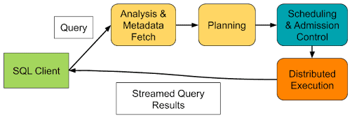

Codegen cache for low latency queries
Apache Impala is a high-performance engine - written primarily in C++ - for executing low-latency SQL queries. At a high level, Impala generates a distributed query plan (first two phases in yellow), admits the query once sufficient capacity is available, and finally executes the query. For a more in-depth description of these phases please refer to Impala: A Modern, Open-Source SQL Engine for Hadoop.

During Distributed Execution, each fragment of the query plan is run on one or more Impala executors, with a degree of parallelism determined by the planner. A fragment is a distinct block of work that can be executed on a single node, and often comprises steps such as scanning and filtering rows from files (or other data sources), hashing that data to group or order it, and sending it to other executors via an exchange for distributed aggregation.
Code Generation
The steps taken within each fragment comprise the bulk of the work an executor does, and databases use different techniques to optimize that work. The actual operations needed will depend on the types of the specific columns being manipulated, which may be simple scalar types or complex data such as structs and arrays. At the beginning of executing each fragment, Impala leverages the LLVM project to generate machine code specific to the steps and columns in the fragment.
Code generation can dramatically speed up the operations done on each row, but has an initial overhead in generating the code that offsets that benefit. This initial overhead of generating code becomes relevant to sub second and low second queries because codegen time of say 100-250 ms is relevant if the query only takes 2 seconds to finish. Typical examples of such queries are queries on kudu tables that finish in seconds. Historically we recommended users to either set DISABLE_CODEGEN=true or to set a higher value for DISABLE_CODEGEN_ROWS_THRESHOLD, so that for very small queries Impala disables codegen.
DISABLE_CODEGEN_ROWS_THRESHOLD currently estimates the number rows being processed on each of the nodes and then decides whether codegen should be disabled. There are scenarios where the planner estimate is incorrect or the query is complex and codegen would have actually helped.
To help mitigate the cost of codegen for short running queries that are run repeatedly we've introduced a new codegen caching feature. With codegen cache enabled, code generation for queries will be cached, and subsequent runs will be faster by not needing to regenerate that code.
Using Cloudera Data Warehouse 1.9.2 with Runtime 2024.0.18.0-206 on AWS EC2 r5d.4xlarge instances, we performed a TPC-DS 1 TB benchmark with 10 executors to evaluate codegen cache performance. Across the whole test suite we saw geometric mean times improve by 4.8%. Since we expect codegen cache to help more with faster queries, we isolate the queries that executed in less than 2s:

For these queries, we see a geometric mean improvement of 22%, significantly improving the performance of low latency queries by eliminating most of the code generation time.
The Codegen Cache
Caching Codegen Functions has been added to reduce the cost of code generation when repeating queries or running substantially similar queries by caching the results of code generation. The codegen cache in Impala works at the fragment level, meaning that it caches and reuses the machine code for specific fragments of a query.
When Impala generates code using LLVM and the codegen cache is enabled, it will store the generated objects using LLVM’s Object Caching. Impala goes through several steps during codegen:
- Load pre-parsed and partially optimized Impala library functions so that new code generation can reference them.
- Define functions representing the operations to be performed using LLVM’s intermediate representation (IR).
- Prune unused library functions loaded in step (1).
- Run LLVM’s builtin passes to optimize the IR generated through steps 1-3.
- Generate machine code from the optimized IR.
The most time consuming portion of these are optimization passes and generating machine code. When using the codegen cache, Impala performs steps 1-3, then constructs a key based on a serialization of the IR. It then looks for a match for the key in the codegen cache; if found, the result will be a machine code object that’s ready for immediate use; otherwise steps 4 and 5 are performed to generate machine code, which will then be stored to the codegen cache and used.
The codegen cache stores all objects in-memory. Its capacity is determined by CODEGEN_CACHE_CAPACITY. When the cache is full, it evicts the Least-Recently Used (LRU) object to make space for new entries.
Example of Caching Codegen Functions
Consider the following table:
create table sales_data (product_id int, category string, sales double);
We run two similar queries sequentially:
select category, sum(sales) from sales_data where category = 'a' group by category;select category, sum(sales) from sales_data where category = 'b' group by category;
After running Query 1, the query profile shows the plan as follows, with zero cached functions and a total codegen compilation time of several dozen milliseconds for each fragment.
F02:PLAN FRAGMENT [UNPARTITIONED] hosts=1 instances=1 ... 04:EXCHANGE [UNPARTITIONED] ... F01:PLAN FRAGMENT [HASH(category)] hosts=1 instances=1 03:AGGREGATE [FINALIZE] ... 02:EXCHANGE [HASH(category)] ... F00:PLAN FRAGMENT [RANDOM] hosts=1 instances=1 01:AGGREGATE [STREAMING] ... 00:SCAN HDFS [default.sales_data, RANDOM] ... Fragment F02: CodeGen: ... - NumCachedFunctions: 0 (0) ... - NumOptimizedFunctions: 2 (2) ... - TotalTime: 52.000ms Fragment F01: CodeGen: ... - NumCachedFunctions: 0 (0) ... - NumOptimizedFunctions: 20 (20) ... - TotalTime: 100.000ms Fragment F00: CodeGen: ... - NumCachedFunctions: 0 (0) ... - NumOptimizedFunctions: 20 (20) ... - TotalTime: 116.000ms
After running Query 2, the functions of fragments F02 and F01 are successfully loaded from the codegen cache, because these fragments are identical in both queries, largely reducing the total codegen compilation time. However, Fragment F00 does not hit the codegen cache because different predicates are used in the two queries, like in our case, category = 'a' vs. category = 'b'. As a result, the codegen functions in the corresponding scan nodes are treated as distinct in the current version.
Fragment F02:
CodeGen:
...
- NumCachedFunctions: 2 (2)
...
- NumOptimizedFunctions: 2 (2)
...
- TotalTime: 32.000ms
Fragment F01:
CodeGen:
...
- NumCachedFunctions: 20 (20)
...
- NumOptimizedFunctions: 20 (20)
...
- TotalTime: 40.000ms
Fragment F00:
CodeGen:
...
- NumCachedFunctions: 0 (0)
...
- NumOptimizedFunctions: 20 (20)
...
- TotalTime: 112.000ms
Note that native UDF won't be supported by the codegen cache, if a fragment contains any native UDF, the codegen of that fragment won't be cached.
Summary
Codegen Cache is supported and enabled by default since Impala 4.3. By setting the flag file option CODEGEN_CACHE_CAPACITY, you can adjust its default value of the memory used for codegen cache.
Interested in contributing? We have future work planned here for codegen caching - IMPALA-13187
Reblogged with edit from Engineering@Cloudera on Medium